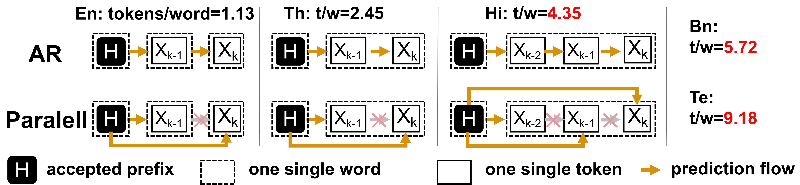
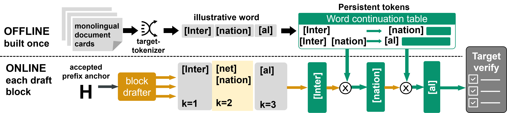
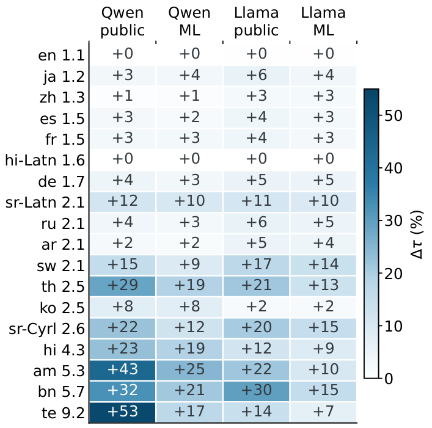
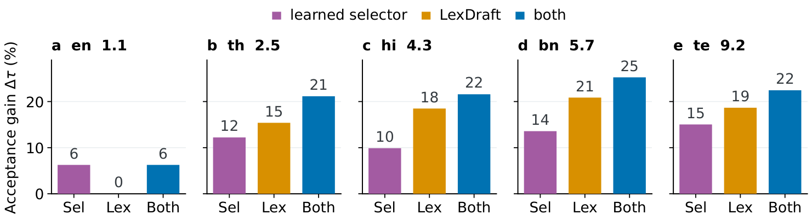
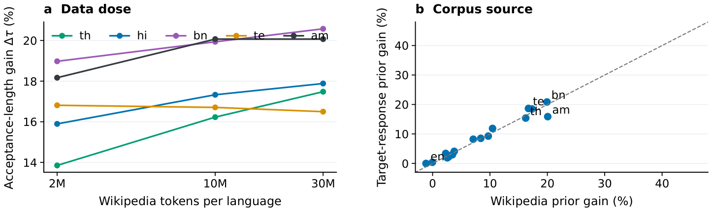
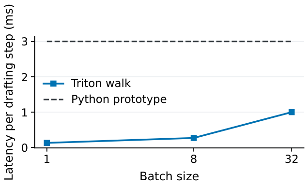
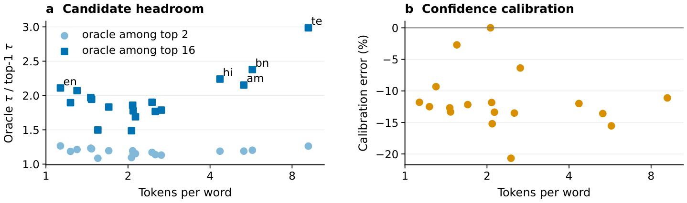

Making parallel drafters fast in every language
A parallel block drafter proposes a dozen tokens in one pass. That works beautifully in English — and can be slower than no speculation at all in Telugu, Thai or Bengali. The cause is not the drafter's training. It is something a tokenizer does to the word.
We measure the mechanism, then restore part of the lost speed with one offline count pass over monolingual text — without touching the model, the tokenizer, or the output.
1Beihang University · 2Peking University · 3The University of Hong Kong
Where the speed goes
Take one Telugu word out of a real prompt. Qwen3-8B's tokenizer splits it into seven pieces — and some of them cannot even be printed on their own, because the tokenizer cut straight through the middle of a character.
The word జనెత్, as the target tokenizer sees it
Each box is one token. Click a position to see what the drafter and the prior propose there.
Same prompt, two runs: what changes is how many tokens each round buys
A speculative loop proposes a block, the target verifies it, and everything before the first mismatch is kept. Both lanes below decode the identical output — they just take different numbers of rounds to get there.
How many languages does this touch?
The mechanism is a property of the tokenizer, not of any one language. We measured it directly: the same parallel text, tokenized with the same Qwen3-8B tokenizer, in 204 languages. 189 of them split words into at least 1.5× as many tokens as English does — and inherit the same slowdown.
Why a block drafter stumbles here
An autoregressive drafter writes one token at a time, so each piece conditions on the pieces before it. A block drafter writes the whole block in one pass: every position sees the accepted prefix and nothing else.
That is fine in English, where a word is usually one token. In Telugu a word spans nine tokens, so seven of them are guessed blind — and the drafter has no idea which byte completes the character the previous position just started.
This is measurable. Revealing an already-correct word start cuts later within-word error by 3–12 points on Qwen and 5–20 on Llama, positive in all 18 conditions. And 27–48% of top-1 public-drafter positions in Hindi, Bengali, Amharic and Telugu propose bytes that cannot join their neighbours — below 0.2% in Latin scripts.

The fix: a prior that lives inside words
Monolingual text already tells you how words are spelled. LexDraft counts, once per language, which pieces follow which prefix inside a word — then uses those counts to rerank and widen the drafter's candidates before verification. It never picks the next word; that stays with the neural drafter.

The whole rule
Candidates are the drafter's top 16 plus the prior's top 4 continuations. ℓk is the log continuation probability inside the word, or the log probability that the word ends. λℓ ≥ 0 is chosen per language; λ = 0 gives back the original drafter exactly.
Lossless. Greedy verification only accepts target argmax tokens; under sampling the rescaled distribution is a valid proposal, so standard speculative acceptance keeps the target distribution. In the batch-1 loop all 2,106 paired requests are token-identical.
Cheap. The walk is a Triton kernel over fixed GPU buffers: 0.13 ms per drafting step at batch 1, 1.0 ms at batch 32, against 30–40 ms engine steps.
The same word again — now with the prior watching
Real candidates from the multilingual DFlash drafter and the real Telugu count table, at each block position. The gold piece is outlined.
Results
Gains land exactly where the diagnosis predicts. English moves by under a percent; Telugu on the public drafter moves by fifty.
Gain in the serving engine
Change in end-to-end vLLM throughput versus the same drafter without the prior, concurrency 1.
Full engine matrix
Qwen3-8B, vLLM nightly, L20, greedy. Speedup vs plain target decoding; acceptance length τ in brackets.
Held-out gains, both model families
Weights chosen on disjoint development prompts; same drafter with and without the prior.

It composes with a learned selector
A learned adjacent-pair selector conditions on the previous token; LexDraft on the word prefix. In Thai each gives 12% and 15%, together 21%.

Matched speculative loop, two targets
Batch-1, normalized to public DFlash = 1.00; ±95% paired-bootstrap margins.
What the gain is made of

Two million Wikipedia tokens recover most of the gain; target-generated text works about as well.

The walk is ~0.4% of an engine step at batch 1 — not the bottleneck.

Useful continuations sit below rank one: the top-16 oracle reaches τ 8.75 in Telugu against 2.93.
What this is not
Not a new drafter
The neural drafter and its weights are untouched; the prior only reorders and widens its candidate set.
Not a cross-word model
Counts stop at the word boundary. Extending them across words loses in 60 of 72 held-out comparisons.
Not a tokenizer change
The target tokenizer stays fixed, so target outputs and costs are unchanged.
Limitations. Engine measurements cover Qwen3-8B on a single NVIDIA L20; Llama uses replay and a speculative loop rather than the engine. Eighteen language and script conditions omit many scripts and domains. Serving is greedy — sampling is checked with loop and target-NLL tests rather than an engine sweep. A 512-token speed cap truncates some MGSM answers; accuracy is computed at 2048. Romanized Hindi has no matching prior text, so its prior is off. Word boundaries follow the tokenizer and segmenter. Which drafter is fastest still depends on load: at concurrency 1 the prior closes the gap in Telugu and Bengali, at concurrency 32 the AR drafter leads both.
Ethics. This work aims to lower the serving cost of the languages current tokenizers fragment most, a cost carried disproportionately by speakers of lower-resource languages. LexDraft changes only which tokens are proposed; target verification keeps the model's outputs, so it adds no content risk. Priors count public Wikipedia text; all evaluation data (MGSM, Aya) are public datasets used under their licenses.
Citation
@inproceedings{lexdraft2026,
title = {What Slows Parallel Diffusion Drafters Across Languages?},
author = {Feng, Yuannuo and Yao, Wenshuai and Chen, Yizhe and Wong, Ngai and Zhou, Wenyong and Kang, Wang},
booktitle = {Under review},
year = {2026}
}